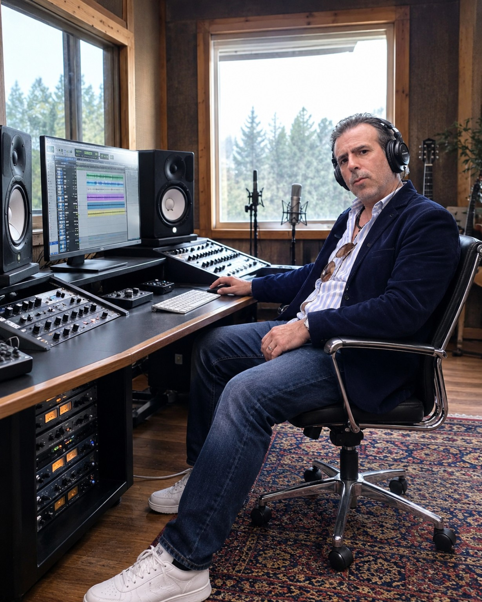

◉ Notícias · Disney & Warner
Independent music · Cinematic storytelling
Close your eyes. Immerse yourself in our music. Feel the magic happen.
Original compositions, orchestral emotion and distinctive musical narratives from STUDIOSB6L and BANDA 6 LATINOS.
Discover the projectBeethoven · B6LListen on SoundCloud


Our vision
Built for stories that deserve to be felt.
STUDIOSB6L is an independent music and publishing identity dedicated to original musical works with cinematic ambition. Its creative direction brings together emotional songwriting, orchestral composition and contemporary production.
The catalogue is developed with audiovisual storytelling in mind, including film, television and other professional creative contexts. Availability and licensing terms are discussed individually.
The artistic project
BANDA 6 LATINOS | B6L
A musical identity exploring the meeting point between human emotion, dramatic composition and cinematic scale.
Cinematic Indie Rock
Intimate voices, piano, restrained guitars and orchestral counterpoint shaped into expansive emotional journeys.
Orchestral & Instrumental
Original instrumental narratives, evolving motifs and arrangements designed to communicate beyond words.
Theatrical & Operatic
Dramatic scenes and vocal storytelling inspired by the expressive possibilities of theatrical music.
Selected directions
A catalogue with many voices.
From orchestral ballads and cinematic rock to dramatic opera and instrumental scores, each work pursues its own musical character.
Featured works include Come What May, What Is a Life Worth, Before Forever, Vicious Circle and Salve Regina: Symphony of Mercy. Audio, artwork, credits and professional licensing information will be linked as each entry is verified.
Dramatic works
Opera. Theatre. Human conflict.
Original dramatic music exploring confrontation, fate, longing and the expressive power of the human voice.
Theatrical opera
Before Forever
A dramatic vocal work conceived around time, human fragility and the threshold of forever.
Operatic theatre
Theatrical Vicious Circle
An intense confrontation-driven musical scene with theatrical character.
Sacred & orchestral
Salve Regina: Symphonia Misericordiae
A work in the catalogue's sacred and symphonic direction.
Selected titles from the B6L repertoire. Listening links and definitive production credits will be added after verification.

MUSIC FOR PICTURE · ORIGINAL SCORES
Where music meets the moving image.
Original musical narratives for film, television and visual storytelling. Discover orchestral textures, dramatic themes and emotionally driven compositions from STUDIOSB6L.
Explore music licensingCATÁLOGO MUSICAL · PLAYLISTS OFICIALES
Un universo de obras y estilos.
Explora las colecciones oficiales de BANDA 6 LATINOS. Selecciona una playlist para escucharla aquí o abrirla en SoundCloud.
Browse by scene
No collections match this scene.
Se o leitor do SoundCloud não carregar, abre esta playlist diretamente no SoundCloud.
Ópera y teatro musical
Deporte y grandes eventos
Música cinematográfica para proyectos audiovisuales deportivos, competiciones, retransmisiones, tráilers y grandes recintos.
B6L · SOUNDCLOUD
Theatrical Music
B6L · SOUNDCLOUD
Theatrical Opera
B6L · SOUNDCLOUD
Richard Wagner · Tristan und…
Repertorio clásico y sinfónico
B6L · SOUNDCLOUD
Beethoven · B6L
B6L · SOUNDCLOUD
Vivaldi Works · B6L
Música sacra y espiritual
B6L · SOUNDCLOUD
The Sound Behind the Scene
B6L · SOUNDCLOUD
Sacra Physical Polyphony
Cinematográfico y orquestal
B6L · SOUNDCLOUD
Event Horizon · Cinematic
B6L · SOUNDCLOUD
B6L Infinite Horizons
B6L · SOUNDCLOUD
Hollywood Reborn · Orchestra B6L
B6L · SOUNDCLOUD
BANDA 6 LATINOS · Cinematic
Blues y R&B
B6L · SOUNDCLOUD
Southern Blues · R&B
B6L · SOUNDCLOUD
BAREFOOT Simple Truths (Modern Americana & Cinematic Folk)
Afro cinematográfico
B6L · SOUNDCLOUD
Afro Cinematic Sync
Brasil · Playlists oficiais
B6L · SOUNDCLOUD
SAMBA BRASIL AO VIVO
Samba brasileiro ao vivo · BANDA 6 LATINOS | STUDIOSB6L
B6L · SOUNDCLOUD
MODO REVOADA — SERTANEJO SINFÔNICO
Sertanejo sinfónico brasileiro · BANDA 6 LATINOS | STUDIOSB6L
Christmas · Playlists oficiais
B6L · SOUNDCLOUD
The Last Voice of the Night (Christmas Songs)
Christmas Songs · BANDA 6 LATINOS | STUDIOSB6L
B6L · SOUNDCLOUD
Midnight in New Orleans: Symphonic Christmas Tales
Christmas Songs · Música de Natal sinfónica · BANDA 6 LATINOS | STUDIOSB6L
Novas playlists · Sync Licensing
B6L · SOUNDCLOUD
MEDIEVAL IMPACT | STUDIOS B6L
Cinematic & orchestral · BANDA 6 LATINOS | STUDIOSB6L · Sync Licensing
B6L · SOUNDCLOUD
TEXAS MASSIVE 2030
Large-scale audiovisual repertoire · BANDA 6 LATINOS | STUDIOSB6L · Sync Licensing
B6L · SOUNDCLOUD
FILM & TRAILERS | B6L
Music for film and trailers · BANDA 6 LATINOS | STUDIOSB6L
B6L Magic
B6L · SOUNDCLOUD
B6L 2 Magic Magic World
B6L · SOUNDCLOUD
CLASSICAL & BROADWAY - B6L
Las referencias a compositores históricos identifican el repertorio y no implican autoría de las composiciones originales. La clasificación de las obras sacras incluye música de inspiración espiritual y bíblica; los títulos concretos basados en Salmos se identificarán individualmente.

SACRED · GREGORIAN · CHORAL
Sacred voices. Timeless atmosphere.
Explore the sacred, choral and Gregorian-inspired side of the BANDA 6 LATINOS catalogue, from contemplative vocal textures to expansive orchestral works.
Explore the music catalogueListen to the catalogue
Discover the sound of B6L.
Explore original music, dramatic compositions, orchestral pieces and cinematic rock.
SoundCloud showcase
Listen to BANDA 6 LATINOS on SoundCloud. Explore the official BANDA 6 LATINOS | Studios B6L | Sync Licensing SoundCloud profile.
Visit our SoundCloudCreative behind the scenes
A montage of illustrative images set to an excerpt from Salve Regina: Symphony of Mercy by BANDA 6 LATINOS.
Listen to the full trackMUSIC FOR PICTURE · PROFESSIONAL LICENSING
Original music for stories that matter.
STUDIOSB6L presents original works by BANDA 6 LATINOS for consideration in film, television, documentaries, advertising, trailers and other audiovisual productions.
Explore the catalogue
Cinematic indie rock, orchestral and instrumental compositions, and theatrical and operatic works. Discover the sound and artistic direction before requesting a specific title.
Listen to musicLicensing enquiries
For synchronization or other commercial uses, please specify the work, production, territory, media, term and intended use. Rights, permissions, availability and fees must be confirmed in writing for each request.
Email licensing enquiriesProfessional collaboration
Selected works may be evaluated for audiovisual projects. Audio formats, alternate versions, deliverables and licensing conditions are discussed case by case; no particular stems or clearances are guaranteed.
Official SoundCloudListening access does not grant a licence. No use is authorised without a separate written agreement and confirmation of the relevant rights.
STUDIOSB6L · COLABORAÇÃO INTERNACIONAL
Uma plataforma. Novas ligações profissionais.
Escolhe como queres participar. Recebemos propostas de artistas, promotores e empresas, sempre sujeitas a análise.
Sou Artista
Apresenta a tua música e o teu projeto artístico.
Apresentar projetoSou Promotor
Propõe concertos, festivais e oportunidades de colaboração.
Apresentar propostaSou Empresa
Procura música, artistas, licenciamento e parcerias.
ContactarAs candidaturas são preparadas no teu programa de email. Contas privadas e carregamentos diretos: EM CONSTRUÇÃO — AGUARDE. Não garantimos publicação nem contratação.

“Transforming silence into music.”
Theatre and opera are at the heart of the work of BENVINDO PEREIRA DA SILVA FERREIRA, author, composer and founder of STUDIOS B6L. A private person by nature, he prefers to work behind the scenes and let the music speak for itself.
Driven by his love of the stage, he composes large-scale operatic works in which each character has a voice of their own. Their voices clash, interrupt and intertwine, while the orchestra expresses what the characters leave unsaid.
In his sacred music, he explores the power of the choir and the intimacy of prayer. His catalogue spans hundreds of works, including more than 300 works registered with his performing rights organisation.
The founder
I don't just compose music. I give voice to stories that have yet to be told.
Benvindo Pereira da Silva Ferreira
Founder · Author & Composer · Music Producer · Mixing & Mastering Engineer
“A minha visão é construir uma plataforma de referência internacional, onde os artistas queiram estar, o público queira regressar e as empresas encontrem valor em trabalhar connosco.”
— Benvindo Pereira da Silva Ferreira
Fundador da STUDIOSB6L
A VISÃO POR DETRÁS DA STUDIOSB6L
Uma plataforma musical e comercial com visão internacional
A STUDIOSB6L nasce de uma visão que vai muito além da criação musical: construir um espaço independente onde a música, a cultura, a criatividade e as oportunidades internacionais se encontram.
Idealizada pelo seu fundador, Benvindo Pereira da Silva Ferreira, esta plataforma representa a evolução de um projeto artístico que procura transformar a paixão pela música numa estrutura de alcance global.
Já com uma presença a nível global através da sua plataforma digital, do catálogo musical e de conteúdos acessíveis a públicos internacionais, a STUDIOSB6L procura estabelecer pontes entre artistas, ouvintes, produtores, profissionais do cinema e da televisão, promotores de espetáculos e parceiros comerciais.
Através de um catálogo musical diversificado, da divulgação de concertos e eventos internacionais, de oportunidades de licenciamento e do desenvolvimento de serviços comerciais ligados à música, procuramos construir um ecossistema capaz de aproximar diferentes públicos e mercados.
A nossa ambição não é apenas fazer música. É criar oportunidades através dela.
Nesta etapa, a prioridade é consolidar a plataforma, ampliar a sua presença internacional, conquistar novos públicos e estabelecer relações de colaboração com pessoas, empresas e instituições que partilhem os nossos valores.
Acreditamos que os grandes projetos não se constroem apenas com recursos financeiros, mas também com confiança, perseverança, criatividade e pessoas que acreditam numa visão comum.
STUDIOSB6L — Uma visão independente. Uma identidade musical. Um horizonte internacional.
ARTISTS & PROMOTERS · Join the STUDIOSB6L platform
Open to independent and established artists, agencies, labels and concert promoters worldwide.
FESTIVALES · PRESENCIA PROFESIONAL
Obras presentadas al circuito de festivales internacionales.
STUDIOSB6L y BANDA 6 LATINOS desarrollan un catálogo de música original para la narrativa cinematográfica y las artes escénicas. Consulta el perfil FilmFreeway del fundador para conocer su presencia en la plataforma.
Ver perfil en FilmFreewaySTUDIOSB6L · FilmFreeway
Four entries submitted through FilmFreeway. Current status: In Consideration; judging decisions pending.
- Barcelona Indie Awards — Die Decima Tertia Maii · Best Sound Design
- Capri, Hollywood – The International Film Festival — Salve Regina: Symphony of Mercy · Capri Special Contest
- Bristol Independent Film Festival — Romeo and Juliet: Act IV, Scene II · Best Soundtrack
- Hollywood Blvd Film Festival — Die Decima Tertia Maii · Best Experimental Short
Professional enquiries
Let's give the next story a sound.
For licensing, synchronization, partnerships and professional catalogue enquiries.
Official email for all professional enquiries concerning STUDIOSB6L and BANDA 6 LATINOS.